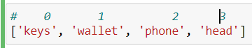
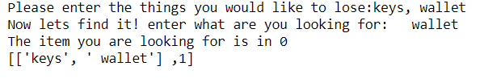

אני רוצה שהאביזרים שהמשתמש רושם- אשר נרשמים ברשימה your_waldo- יופיעו לי כאיבר בתוך רשימה, ולא כרשימה בפני עצמה.
המשתמש רוצה לאבד keys, wallet, phone, head:

ולא:

בתמימותי חשבתי שמספיק הספליט, אבל טעיתי ביותר. הפיסת ידע הזו שחסרה לי תוקעת לי את העבודה.
אני די אבודה בנושא, אותו הדבר קרה לי עם מי דגנים בריאים, תרגיל שהגשתי בו רק כיוון.
המטרה שלי היא שהפונקציית אינדקס באמת תראה איפה הפריט שהמשתמש איבד.
השתמשתי בפייתון טוטור פניתי ליוטיוב עם סרטונים בנושא קראתי בפורומים של StackOverFlow
2 לייקים
Yam
היי רבקה, שמח לראות שאלה עניינית שנעשה מחקר מאחוריה.
שימי לב שאת עושה append עם הרשימה שיצרת (אחרי ה־split) ל־your waldo. זה ממש אומר להוסיף לרשימה איבר חדש. מאחר שהארגומנט הוא lets_try_this, שהוא רשימה בפני עצמו (זו התוצאה של split), נוצרת לך רשימה בתוך רשימה.
שימי לב שבשורה 3 בקוד שהבאת את שמה כבר איבר בתוך your_waldo, ו־lets_try_this מצטרף אליו.
איך היית רוצה שתראה your_waldo?
devorack
אוקיי. ראשית אציין שקראתי בעיון פעמיים, ולא ירדתי לסוף הדברים.
כמה נק שעלו לי (בגדר למל"ם):
תנסי להדפיס אחרי כל שינוי / פעולה / פקודה כדי לראות מה קורה (מתי זה קורה ואיזו פקודה גרמה לזה) (למשל - הייתי מדפיסה את your_waldo לפני, את lets_try_this וכו’)
append vs. extend ההבדל בין שתי הפעולות האלו יכול אולי לפתור את הבעיה. לדעתי היה תרגול להבדלים ביניהן באחת המחברות, אבל בכל מקרה שווה לעשות על זה כמה ניסיונות
3.צריך לשים לב איך (איפה) אינדקס מחפשת - גם על זה היה תרגול באחת המחברות היותר מוקדמות לדעתי
בשימוש ברשימות - צריך לשים לב היטב לשימוש בפעולות על הרשימה, גם בתוך פונקציה (ומוסבר כאמור במחברת 5, כולל פתרונות לבעיה) - לא נראה לי המקרה פה, אבל כיוון שתקע אותי באיזה מקום חשבתי שזה מקום טוב לציין
2 לייקים
Becky
your_waldo צריכה לכלול רשימה אחת בלבד שהיא תוצאה של מה שהמשתמש מכניס אליה.
כל חפץ שהמשתמש מכניס מקבל את מקומו כאובייקט, בדומה לרשימות החיות שמופיעות למעלה במחברת.
החשביה הייתה-אם המשתמש מכניס באינפוט (lets try this) את החפצים, החפצים צריכים להופיע בyour waldo כשכל אחד הוא איבר בפני עצמו.
אז מה שלא הבנתי זה שהארגומנט lets try this הוא רשימה בפני עצמה- כתוצאה מהספליט.
אז מה שחסר לי להבין: איך אני הופכת את your waldo לרשימה בה המשתמש יכול להכניס את האיברים שהוא רוצה וגם שהפונקצייה תדבר אל המשתמש. החשיבה שלי אני מתכננת פונקציות שמטרתם להיות כמה שיותר נגישות למשתמש.
חיפשתי כרפרנס את התרגיל בו יש את השמות ואת הציונים של תלמידים שונים, מאחר ולא מצאתי- כנראה אוריד שוב את המחברות מאוחר יותר היום.
מתגובתך אני יכולה להבין כי מה שיוצר את הברדק זה ה i בתוך your_waldo…
האם אני מסבכת את זה יותר ממה שאמור להיות? אני חושבת שאני מפספסת משהו גדול בהבנה
Becky
3.—> אחפש את התרגול הזה. בינתיים ראיתי כמעט את כל התרגולים. את התרגול של השבוע ראיתי לעומוקו ולרוחבו בחצי שעה הראשונה.
4. ספויילר ומידע חדש! תודה על התיקון.
אלך לפי העצה שלך, ואדפיס כל חלק בקוד
לייק 1
devorack
אופס! מתגובתך הבנתי שהמשפט שכתבתי ב4 הוא כללי מדי ולא נוסח כהלכה. ערכתי אותו בתגובה - סליחה!
Yam
נראה לי שאת מבינה דווקא די סבבה ואת בעיקר צריכה לשחק עם זה הרבה בלי לפחד
קחי את הקוד ותתחילי לשנות בו דברים ותראי מה קורה. זו הדרך הכי טובה להבין איך פייתון עובדת.
תני לי דוגמה לאיך את רוצה שזה יראה וננסה לבנות את זה יחד
מגניב מגניב מגניב, תודה על התרשים. זה עוזר לי ממש להבין מה הכוונה.
אז כן, היית ממש סופר קרובה במקור והחשיבה שלך הייתה נכונה לגמרי, השתמשת בפעולות הנכונות ובטיפוסים הנכונים אבל משהו התפספס בדרך.
ממליץ לחזור רגע לתגובה הזו:
שימי לב שכשאת מדפיסה את your_waldo, מה שאת רוצה שיכלול רק את רשימת הדברים שהמשתמש רוצה לאבד, יוצא לך רשימה שכוללת רשימה ומספר. נסי לעשות backtrace בקוד ולהבין למה זה קורה ואיך פותרים את זה.
Becky
תודה תודה תודה.
הצלחתי.
האם אני יכולה ללמד למה זה הצליח ולמה לא? עוד אחקור את זה מאוחר יותר.

 השתמשתי בפייתון טוטור
השתמשתי בפייתון טוטור

{kind=link}
{kind=link}
{kind=link}
{kind=link}
{kind=link}